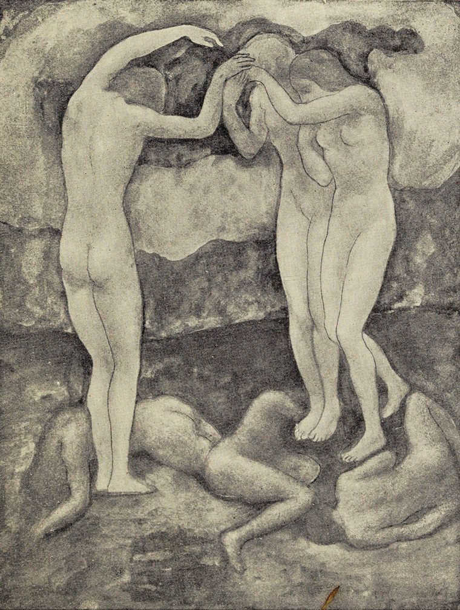

23La preghiera
Poi una sacerdotessa disse: Parlaci della Preghiera.
Ed egli rispose dicendo:
Pregate nell'angoscia e nel bisogno; vorrei che pregaste anche nella pienezza della vostra gioia e nei vostri giorni di abbondanza.
Che cos'è infatti la preghiera, se non l'espandersi di voi stessi nell'etere vivente?
E se è per vostro conforto riversare la vostra oscurità nello spazio, è anche per vostra delizia riversarvi l'alba del vostro cuore.
E se non potete che piangere quando la vostra anima vi chiama alla preghiera, essa dovrebbe spronarvi ancora e ancora, pur nel pianto, finché non verrete ridendo.
Quando pregate, vi innalzate per incontrare nell'aria quelli che pregano in quella stessa ora, e che se non nella preghiera non potreste incontrare.
Perciò la vostra visita a quel tempio invisibile non sia che per l'estasi e la dolce comunione.
Perché se entraste nel tempio al solo scopo di chiedere, non ricevereste:
E se vi entraste per umiliarvi, non sareste innalzati:
E perfino se vi entraste per implorare il bene degli altri, non sareste ascoltati.
Basta che entriate nel tempio invisibile.
Non posso insegnarvi a pregare con le parole.
Dio non ascolta le vostre parole, se non quando è Lui stesso a pronunciarle attraverso le vostre labbra.
E non posso insegnarvi la preghiera dei mari e delle foreste e delle montagne. Ma voi che siete nati dalle montagne e dalle foreste e dai mari potete trovare la loro preghiera nel vostro cuore,
E se solo ascoltate nella quiete della notte, li udrete dire in silenzio:
«Dio nostro, che sei il nostro io alato, è la tua volontà in noi che vuole.
È il tuo desiderio in noi che desidera.
È il tuo impulso in noi che vorrebbe mutare le nostre notti, che sono tue, in giorni che sono anch'essi tuoi.
Non possiamo chiederti nulla, perché tu conosci i nostri bisogni prima che nascano in noi:
Tu sei il nostro bisogno; e donandoci più di te stesso ci doni tutto.»
